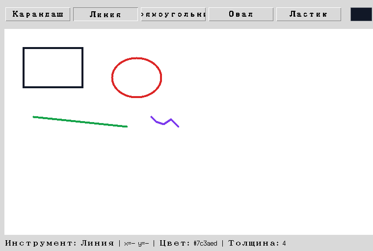

Глава 18 · Финальные штрихи
Paint Pro — полная программа и итоги главы
Тот же холст, что и в разделе 18.7 — но теперь с документом, историей отмены и архитектурой, которая выдержит рост проекта.
Итоговая программа

Файл целиком, самодостаточный и без невидимых зависимостей от других уроков:
📄 projects/tkinter/paint-app/paint_app.py
paint_app.py — структура
class Tool(Enum): ...
@dataclass
class Shape: ...
@dataclass
class DrawingState: ...
def normalize_bounds(x1, y1, x2, y2): ...
class PaintApp:
def __init__(self, root): ...
def build_ui(self): ...
def set_tool(self, tool): ...
def set_color(self, hex_color): ...
def choose_custom_color(self): ...
def set_width(self, value): ...
def on_press(self, event): ...
def on_drag(self, event): ...
def on_release(self, event): ...
def render_document(self): ...
def undo(self): ...
def redo(self): ...
def clear_canvas(self): ...
def save_document(self): ...
def load_document(self): ...
def main():
root = tk.Tk()
app = PaintApp(root)
root.mainloop()
if __name__ == "__main__":
main()Запустите приложение у себя
python paint_app.py в терминале — либо кнопкой Run в VS Code или PyCharm. Сравните с paint_app_basic.py (раздел 18.7) — тот же холст и та же идея, но совершенно другая внутренняя архитектура.Чек-лист готового приложения
МОДЕЛЬ
- документ (
document) — список фигур, источник истины - DrawingState — параметры инструмента, отдельно от самих фигур
- Canvas — только отображение, перерисовывается из документа
ИНСТРУМЕНТЫ
- карандаш непрерывным штрихом
- линия, прямоугольник, овал с живым превью
- ластик как штрих цветом фона
- выбор инструмента виден на экране, не только в памяти
ИСТОРИЯ
- undo/redo по действиям, а не по отдельным элементам Canvas
- новое действие очищает redo_stack
- очистка холста обнуляет историю вместе с документом
СОХРАНЕНИЕ
- сохранение и загрузка рисунка через JSON
- отмена диалогов сохранения/открытия/выбора цвета обработана честно
- строка состояния и горячие клавиши
Мост к главе 19
Дальше: движение и повторение вместо ожидания клика
Рисовалка целиком построена вокруг ожидания действий пользователя — программа реагирует, но сама не «живёт». В следующей главе — игра «Змейка» на Turtle — появится собственный игровой цикл, где программа сама двигает объекты кадр за кадром, независимо от того, нажимает ли пользователь что-то прямо сейчас.
Практика: Paint Pro целиком
Модуль tkinter открывает нативное окно Python — выполните локально в VS Code, PyCharm или Jupyter
Практика выполняется локально
Итоги главы 18
Что мы построили и чему научились
- Canvas хранит элементы (items), а не пиксели — create_* добавляет запись в список, который помнит сам виджет, и возвращает её item_id.
- Координаты Canvas растут вправо и вниз от левого верхнего угла — не как у Turtle, где начало в центре, а Y растёт вверх.
- Рисование мышью — жест из трёх событий: press запоминает начало, drag обновляет черновик, release фиксирует результат.
- Живое превью — это ОДИН элемент, который создаётся один раз и обновляется через coords(), а не пересоздаётся на каждое движение.
- Прямоугольник и овал задаются двумя противоположными точками; овал вписан в получившийся прямоугольник, а не задан центром и радиусом.
- Undo/redo работают по логическим ДЕЙСТВИЯМ пользователя, а не по отдельным элементам Canvas — один карандашный штрих отменяется целиком.
- Документ (список фигур) — источник истины; Canvas каждый раз перерисовывается из него заново через render_document(), тот же принцип, что и render() в главе 17.
- Сохраняется не картинка, а документ — как JSON, который можно загрузить и перестроить заново в любой момент.